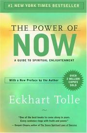
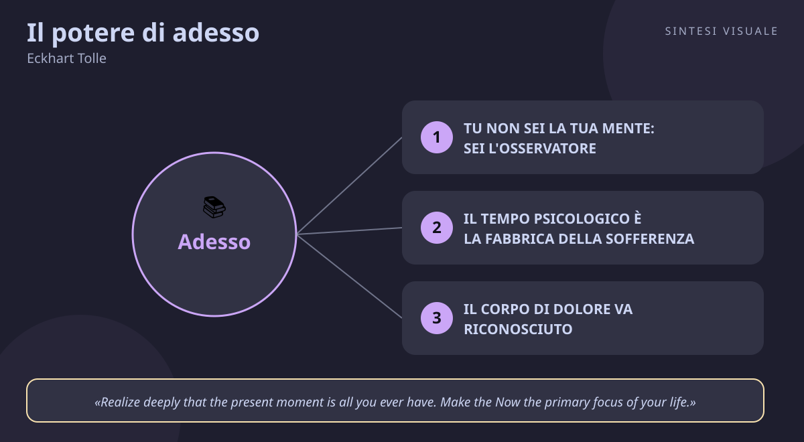

Home / Libri / Il potere di adesso

Il potere di adesso
Eckhart Tolle · Gestione dello stress
«Il potere di adesso»
- Tu non sei la mente
- Tempo psicologico
- Corpo di dolore
- Dire si al presente
🧭Introduzione
Eckhart Tolle, nato Ulrich Leonard Tolle in Germania nel 1948 e trasferitosi poi in Inghilterra e in Canada, non è un accademico né un guru di professione: è un uomo che a 29 anni, dopo anni di ansia e depressione fino a pensieri suicidi, racconta di aver vissuto una trasformazione interiore spontanea in una notte — la percezione improvvisa di non essere i propri pensieri. Passò poi circa dieci anni a capire e integrare quell'esperienza, facendo anche il ricercatore all'Università di Cambridge, prima di diventare insegnante spirituale. Il libro nasce da quella domanda bruciante: perché soffriamo così tanto se la vita, in questo istante, spesso non ha nulla che non va?
Perché questo libro conta oggi: viviamo con la mente sempre altrove — a rimuginare sul passato e a temere il futuro — mentre il corpo sta qui, adesso. Passiamo le giornate dentro un rumore mentale continuo, e lo chiamiamo vita normale. Tolle offre una via d'uscita radicale e pratica: tornare al momento presente. È utile a chi è stressato, ansioso, sopraffatto dai pensieri, ma anche a chi cerca lucidità nelle decisioni, nelle vendite, nel parlare in pubblico e nelle relazioni: la presenza rende più efficaci ovunque.
📘Riassunto
La scintilla centrale: quasi tutta la sofferenza umana nasce dall'identificazione con la mente che pensa senza sosta — solo tornando pienamente al momento presente possiamo ritrovare pace, chiarezza ed energia.
La struttura logica segue il percorso del libro, scritto in forma di domande e risposte: si parte dalla diagnosi (tu non sei la tua mente; l'emozione è la reazione del corpo ai pensieri); si passa alla via d'uscita (la coscienza come uscita dal dolore, il corpo di dolore del passato); poi si entra nel cuore (muoversi profondamente nell'Adesso, smascherare le strategie della mente per evitarlo); infine si incarnano gli strumenti (stato di presenza, corpo interiore, portali verso il non-manifestato) e le applicazioni (relazioni illuminate, oltre felicità e infelicità, il significato della resa).
Il punto di svolta è la distinzione tra tempo-orologio e tempo psicologico: il primo serve per organizzare la vita pratica, il secondo — rimuginare e preoccuparsi — crea problemi dove ci sono solo situazioni da gestire. Tutti i problemi sono illusioni della mente: non possono sopravvivere nella realtà dell'Adesso. Quando capisci questo, smetti di creare altro dolore e il presente diventa un alleato invece di un nemico.
L'eredità oggi: raccomandato da Oprah Winfrey, rimasto per anni nella classifica dei bestseller del New York Times, tradotto in decine di lingue (33 e oltre) con milioni di copie vendute nel mondo, The Power of Now è diventato uno dei testi di crescita spirituale più influenti del nostro tempo, ponte tra psicologia, meditazione e tradizioni come il buddhismo.
💡Concetti chiave
- Tu non sei la tua mente: sei l'osservatore — quando osservi il pensiero, non sei più intrappolato nel pensiero.
- Il tempo psicologico è la fabbrica della sofferenza — passato e futuro usati oltre il necessario generano rimpianto, ansia e negatività.
- Il corpo di dolore va riconosciuto, non nutrito — il dolore emotivo accumulato si risveglia e chiede altri pensieri dolorosi: osservarlo lo dissolve.
- Di' sì al momento presente: la resa è potere — accettare ciò che è toglie energia al conflitto interiore e restituisce lucidità d'azione.
- Il corpo interiore è il portale più vicino — respiro, silenzio e spazio riportano la coscienza fuori dalla testa e dentro la vita.
- Le relazioni diventano illuminate senza dipendenza — niente più possesso e dramma: presenza, ascolto e spazio per l'altro.
📖1. Tu non sei la tua mente: sei l'osservatore
- Definizione la mente produce un flusso continuo di pensieri, ma tu sei la coscienza che può notarlo. Tolle chiama questa pratica "osservare il pensatore": nel momento in cui noti un pensiero, si apre uno spazio tra te e il pensiero stesso.
- Esempio sei in coda alla posta e la testa ripete "perdo tempo, che giornata sprecata". Se te ne accorgi e pensi "ecco, la mia mente sta recitando la sua storia", in un attimo la tensione cala: il fatto (la coda) resta, il dramma si sgonfia.
- Come applicarlo più volte al giorno chiediti "cosa sto pensando in questo momento?" e ascolta senza giudicare per 30 secondi; oppure crea un "vuoto di non-mente" portando tutta l'attenzione su un suono o sul respiro per un minuto.
- Errore comune voler spegnere i pensieri a forza o giudicarli ("non devo pensare così") — così la mente combatte contro se stessa e si rafforza; osservare invece di lottare è la mossa giusta.
- Collegamento Daniel Kahneman (Pensieri lenti e veloci, già trattato): osservare il pensiero è il modo per non farsi guidare alla cieca dal Sistema 1; Susan David (Agilità emotiva, già trattata): "sganciarsi dagli ami" è la stessa arte con un altro nome.
📖2. Il tempo psicologico è la fabbrica della sofferenza
- Definizione Tolle distingue il tempo-orologio (utile: appuntamenti, scadenze, pianificazione) dal tempo psicologico (dannoso: rivivere il passato con colpa e proiettare il futuro con paura). Negatività e sofferenza hanno le radici nel tempo psicologico.
- Esempio devi mandare un preventivo entro venerdì (tempo-orologio: sano, organizzi il lavoro). Poi la mente aggiunge il film: "e se lo rifiutano, e se perdo il cliente, e se finisco male come tre anni fa" (tempo psicologico: sofferenza fabbricata adesso per un futuro che non esiste).
- Come applicarlo quando senti ansia, chiediti "che problema ho in questo esatto istante, a parte il pensiero che ho in testa?"; usa passato e futuro solo per compiti pratici (imparare, pianificare), poi riporta l'attenzione a ciò che puoi fare ora.
- Errore comune credere che preoccuparsi equivalga a prepararsi — in realtà la preoccupazione consuma le energie che servirebbero per agire bene; pianificare con calma è preparazione, rimuginare no.
- Collegamento Dale Carnegie (Come vincere lo stress, già trattato): vivere in "compartimenti stagni" di 24 ore; Kelly McGonigal (Il lato positivo dello stress, già trattata): lo stress diventa dannoso soprattutto quando lo vivi come nemico inevitabile.
📖3. Il corpo di dolore va riconosciuto, non nutrito
- Definizione il "corpo di dolore" è il residuo di dolore emotivo passato che vive in noi come un campo energetico quasi autonomo: quando qualcosa lo risveglia, reclama altri pensieri dolorosi per nutrirsi e continuare a esistere.
- Esempio un collega ti corregge in riunione e tu esplodi dentro per ore ("non mi rispettano mai, come quella volta con…"): non è solo la frase di oggi a farti male, è il vecchio dolore che ha trovato nuovo cibo e vuole altro passato a cui aggrapparsi.
- Come applicarlo quando senti l'ondata emotiva, fermati e dille dentro di te "questo è il corpo di dolore che si è attivato"; porta l'attenzione sulla sensazione fisica (nodo allo stomaco, petto stretto) senza trasformarla in storia mentale; respira e resta l'osservatore silenzioso finché l'onda passa.
- Errore comune raccontare e ri-raccontare l'offesa a tutti per avere ragione ("hai sentito cosa mi ha detto?") — ogni ripetizione è cibo fresco per il corpo di dolore; parlarne una volta per risolvere va bene, ruminarlo no.
- Collegamento David Burns (Feeling Good, già trattato): le emozioni seguono i pensieri distorti — interrompere la narrazione spezza il circolo; Marshall Rosenberg (Le parole sono finestre, già trattato): osservare senza valutare è il primo passo della comunicazione nonviolenta.
📖4. Di' sì al momento presente: la resa è potere
- Definizione la "resa" di Tolle non è rassegnazione ma accettazione interiore di ciò che è già accaduto: smettere di dire "questo momento non dovrebbe esistere" elimina il conflitto che raddoppia ogni dolore. Agire poi diventa più limpido, non più debole.
- Esempio il treno è in ritardo e rischi di arrivare tardi a un colloquio. Resistere significa insultare i tabelloni e avvelenarti il sangue; arrendersi al fatto significa dire "il treno è fermo, punto" e usare i dieci minuti per ripassare la presentazione o avvisare con un messaggio calmo.
- Come applicarlo davanti a un fatto sgradevole e irreversibile, pronuncia dentro di te "sì a ciò che è" e chiediti "qual è l'azione più saggia adesso?"; separa sempre il fatto (che accetti) dalla mossa successiva (che scegli con lucidità).
- Errore comune confondere la resa con la passività ("allora non faccio niente") — Tolle dice l'opposto: solo chi accetta la realtà vede con chiarezza cosa cambiare davvero, invece di sprecare forze contro ciò che non può disfare.
- Collegamento Viktor Frankl (L'uomo in cerca di senso, già trattato): l'ultima libertà umana è scegliere l'atteggiamento di fronte a ciò che non si può cambiare; gli stoici (Epitteto, Marco Aurelio): distinguere ciò che dipende da noi da ciò che non dipende da noi.
📖5. Il corpo interiore è il portale più vicino
- Definizione il corpo non è solo un oggetto da guardare allo specchio: sentito dal di dentro come campo di energia viva ("corpo interiore"), diventa un portale per uscire dalla testa e rientrare nell'Adesso. Altri portali sono il silenzio, lo spazio e il respiro consapevole.
- Esempio prima di una telefonata difficile o di un discorso in pubblico, invece di ripeterti "oddio, oddio", sposta l'attenzione per un minuto alle mani (formicolio, calore), ai piedi per terra, al respiro che entra ed esce: la voce trema di meno perché tu sei rientrato nel corpo.
- Come applicarlo pratica quotidiana da due minuti — chiudi gli occhi, senti le mani, le braccia, le gambe come un'unica energia, poi il corpo intero; durante la giornata usa "micro-ritorni" (tre respiri sentiti davvero) tra una attività e l'altra.
- Errore comune trattare la presenza come un'altra prestazione da valutare ("sono stato presente abbastanza? ho meditato bene?") — la presenza non si misura, si abita; anche accorgersi di essersi distratti è già presencia che ritorna.
- Collegamento Jon Kabat-Zinn e la mindfulness: il body-scan è la versione laica dello stesso portale; Chris Anderson (TED Talks, già trattato): i grandi oratori "abitano" il corpo e il palco invece di fuggire nella testa.
📖6. Le relazioni diventano illuminate senza dipendenza
- Definizione gran parte del dramma di coppia nasce — dice Tolle — da menti che chiedono all'altro di riempire un vuoto (passato, aspettative, corpo di dolore). La relazione illuminata rovescia la logica: due presenze intere che condividono l'Adesso invece di due mancanze che si usano.
- Esempio il partner torna a casa silenzioso. La mente dipendente produce il film: "non mi ama più, come al solito". La presenza invece osserva il fatto, respira, e chiede con calma "come stai stasera?" lasciando spazio alla risposta vera invece di interrogare un sospetto.
- Come applicarlo in ogni conversazione importante, ascolta senza preparare la risposta mentre l'altro parla; lascia piccole pause di silenzio invece di riempirle; quando nasce attrito, nomina il fatto ("vedo che alziamo la voce") invece di etichettare la persona ("sei sempre il solito").
- Errore comune usare la spiritualità come arma ("tu non sei presente, io sì") o pretendere che l'altro cambi per primo — la relazione cambia quando almeno uno dei due resta presente invece di alimentare il botta-e-risposta dei due corpi di dolore.
- Collegamento Douglas Stone e colleghi (Difficult Conversations, già trattato): separare intenzione e impatto, passare dalla colpa al contributo; Adam Grant (Give and Take, già trattato): dare presenza senza calcolare il contraccambio rende anche il lavoro più generativo.
💬Citazioni da ricordare
"Realize deeply that the present moment is all you ever have. Make the Now the primary focus of your life." — Conta perché è il cuore del libro in una frase: tutto ciò che hai davvero è questo istante, il resto è pensiero.
"The moment you realize you are not present, you are present. Whenever you are able to observe your mind, you are no longer trapped in it." — Conta perché trasforma ogni distrazione in un'occasione: accorgertene è già il ritorno.
"Time isn't precious at all, because it is an illusion. What you perceive as precious is not time but the one point that is out of time: the Now. That is precious indeed." — Conta perché rovescia l'ossessione moderna per "il tempo che manca": prezioso non è il tempo, è l'Adesso fuori dal tempo.
Tu non sei la tua mente: nel momento in cui osservi il pensiero, non sei più intrappolato nel pensiero. E tutti i problemi sono illusioni della mente: non possono sopravvivere nella realtà dell'Adesso. Infine: dire sì al momento presente non è debolezza, è il potere che toglie energia al conflitto e la restituisce all'azione lucida.
🌍Esempi di oggi
- La notifica che rovina la cena — Sei a tavola ma la testa è al messaggio del capo che arriverà domani. Il fatto è semplice (stai cenando), il film è il tempo psicologico. Torna al piatto, al gusto, alla persona davanti a te: tre respiri e la serata ricomincia da qui.
- Il rimprovero che riaccende vecchie ferite — Un cliente critica il tuo lavoro e dentro parte l'archivio di tutte le critiche passate: è il corpo di dolore che chiede cibo. Nominalo ("vecchio dolore attivato"), senti il corpo per un minuto, poi rispondi solo al punto di oggi con una domanda pratica.
- La riunione dove tutti parlano e nessuno ascolta — Ognuno prepara la replica mentre l'altro parla: due (o dieci) menti assenti. Prova la presenza: ascolta davvero, lascia due secondi di silenzio prima di rispondere, riassumi il fatto prima di obiettare. La qualità delle decisioni sale senza allungare i tempi.
🛠️Azioni pratiche
- Tre "micro-ritorni" al giorno: imposta tre sveglie (mattina, pranzo, sera) e per un minuto senti respiro e corpo interiore (mani, piedi, intero corpo) senza giudicare. Segna su un foglio ogni volta che ti accorgi di essere tornato presente.
- Dieta dal tempo psicologico per 48 ore: ogni volta che ti sorprendi a rimuginare o a catastrofizzare, scrivi su due colonne "fatto di adesso" e "film della mente"; agisci solo sul fatto, lascia andare il film con un "sì a ciò che è".
- Una conversazione in presenza piena: scegli una persona (partner, figlio, collega) e in un dialogo di almeno dieci minuti ascolta senza interrompere né preparare risposte, lascia pause di silenzio e rispondi solo dopo aver riassunto ciò che hai capito.
💎Da portare a casa
La pace non è nel prossimo pensiero risolto: è nello spazio tra i pensieri, qui e adesso.
Vuoi approfondire? Rispondi in chat con il numero del concetto (1–6) che vuoi esplorare — osservatore interiore, tempo psicologico, corpo di dolore, resa, corpo interiore o relazioni illuminate — oppure chiedimi come applicare la presenza a una tua situazione reale: stress, ansia, lavoro, vendite, public speaking o rapporti difficili.
🖼️In un colpo d’occhio

Tocca l’immagine per ingrandirla.